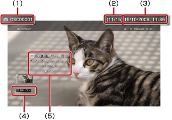
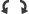

相片 > 使用操作介面
使用操作介面
使用螢幕上的操作介面，可執行各種操作。操作介面可以 按鈕設定為顯示／不顯示。
按鈕設定為顯示／不顯示。
顯示模式

可變更顯示於螢幕中的圖像大小。
| 普通 | 不變更縱橫比，配合螢幕尺寸顯示。 |
|---|---|
| 縮放 | 不變更縱橫比，但消除上下或左右的邊緣部份，以顯示於整個螢幕中。 |
提示
部分圖像可能會出現無法變換顯示模式的情形。
變換效果
更換圖像的變換方式。
| 普通 | 於消除上一張圖像的同時，更換為下一張圖像。 |
|---|---|
| 滑動 | 上一張圖像有如是被下一張圖像滑動至左側般地更換顯示。 |
| 淡化 | 使用淡化效果切換下一張圖像 |
修整
刪除圖像左下左右的不要部分。使用無線控制器的左操作桿／右操作桿，能選擇要留下的範圍。使用左操作桿可朝任意方向捲動，右操作桿則能擴大／縮小。修整後的圖像會以其他名稱保存。
提示
只能修整已保存至硬碟的圖像。
追加至播放目錄
將圖像追加至播放目錄。
提示
僅限保存在硬碟的圖像才能追加至播放目錄。
列印
列印圖像。
提示
若要列印，需先設定印表機。請選擇 （設定）＞
（設定）＞ （設定印表機）＞［選擇印表機］。
（設定印表機）＞［選擇印表機］。
設定為桌布
可設定圖像為顯示於螢幕上的桌布。會自動登錄放大／縮小、旋轉後顯示於螢幕中的現存圖像。
提示
- 尚未使用桌布時，請調整（設定）＞
 （主題設定）＞［桌布］的設定。
（主題設定）＞［桌布］的設定。 - 可登錄為桌布的圖像僅限1張。登錄其他圖像後，即會自動覆寫目前登錄的圖像。
刪除
刪除圖像。
提示
僅限保存在硬碟的圖像才能追刪除。
顯示
顯示圖像的詳細資訊。每次按下 按鈕，即會更換為顯示Exif資訊的畫面、顯示資訊列的畫面或無任何顯示的畫面。
按鈕，即會更換為顯示Exif資訊的畫面、顯示資訊列的畫面或無任何顯示的畫面。
顯示資訊列的畫面

(1) |
圖像名稱 |
|---|---|
(2) |
圖像編號／圖像總數 |
(3) |
拍攝日 |
(4) |
狀態圖示 |
(5) |
操作介面 |
擴大／縮小

擴大／縮小顯示圖像。使用控制器的左操作桿可朝任意方向捲動，右操作桿則能擴大／縮小。
向左旋轉／向右旋轉

向左／右90度旋轉圖像。
上／下／左／右
（顯示模式）設定為［縮放］時，可移動並顯示圖像因螢幕限制而被隱藏的部分。
上一張／下一張
顯示上一張／下一張圖像。
幻燈片秀
自動依序顯示每張圖像。